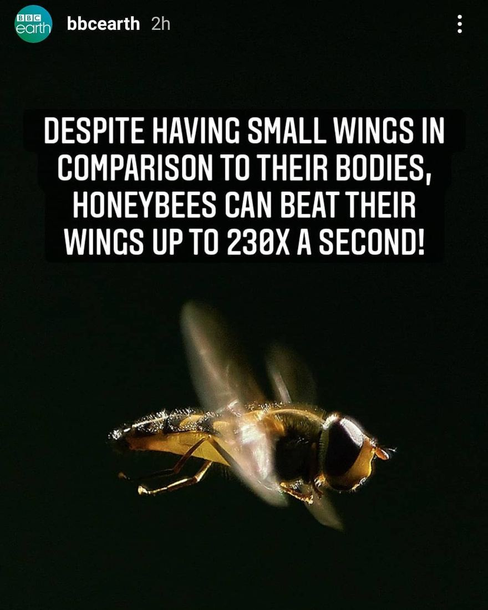

Zweefvlieg, geen bij
15 september 2020 · BBC Earth
- Op de foto
- Zweefvlieg
- Het ging over
- Bij

In english for BBCearth, a company you wouldn't expect to make this kinds of mistakes.
The picture clearly shows a hoverfly! Better luck next time @bbcearth
Scherp opgemerkt door @_timdeboer_